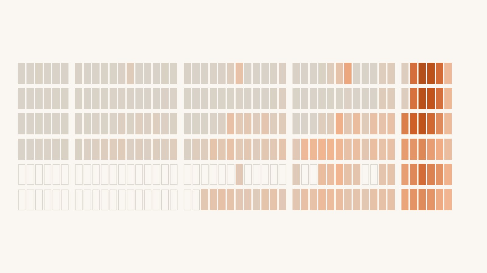

← Research·Model architecture · Episode 3·Experiments·
Reading a looped model: which lenses see Inkling 2 Mini's hidden step, and which don't
Inkling 2 Mini runs its middle twelve layers three times and keeps no single residual stream, so the lenses we use to read ordinary transformers go nearly blind inside its loop. We tried six ways to read it on 867 two-step questions, with the Looped Lens Challenge's rules and vote as the benchmark. For people building lenses or monitors for looped models: only a translator trained to predict the reply's first word beat the plain logit lens out of sample.

Summary: the short answer and the key results
In short
Which lenses can read Inkling 2 Mini's hidden reasoning step?
Mostly the ones that are trained for it. Inkling 2 Mini loops layers 6-17 three times and lets every layer read its own mix of earlier blocks, so the logit lens names the hidden step on only 2% of questions, on average, across the 36 looped visits; it works only in the last six layers (up to 45%). On 867 self-written two-step questions, scored with the Looped Lens Challenge's vote rule and 8-fold cross-validation, choosing which visits to read with untrained lenses gained 0.9 points over the starter. A tuned lens gained nothing. A low-rank "future lens", trained to predict the first word of the model's reply, gained 4.8 points and won in all 8 folds. A concept lens and designs proposed from the weights added little or nothing. Our best entry, v2, is about 1.8 points above v1 out of sample, which is within noise. On NDIF's hosted model it gave the same pass or fail verdict as our offline copy on 183 of 191 questions.
Key results
| What we tested | Result | Compared with |
|---|---|---|
| Does the logit lens read the loop? | Hardly. It votes for the hidden step on 2.2% of questions, averaged over the 36 core visits; 45% at its best visit, 44, in the last block | The output head's own mix: 0.7% in the core. Each layer's MoE input: 4.5% |
| Does choosing visits help, with no training? | Barely: +0.9 points over the starter, out of sample (one fold's 95% CI ±2.2; 7 of 8 folds) | Starter: 0.503 cross-validated pass rate |
| Does a trained translator help? | One kind does. The future lens: +4.8 points (±3.4), better in 8 of 8 folds; +3.9 over the untrained search alone | Tuned lens (next token): +0.7 (±2.7), 5 of 8 folds |
| Does the concept lens add to it? | No. +2.1 alone (8 of 8 folds), −0.1 on top of the future lens | Future lens alone: +4.8 |
| Is v2 better than v1? | Not measurably: v2's lens set beats v1's by +1.8 points (±3.6; 7 of 8 folds better, 1 worse) | v1's set: +3.9 over the starter; v2's: +5.7 |
| Do the numbers hold on the hosted model? | Yes. Same verdict on 106/112 (v1) and 183/191 (v2) held-out questions; pass rate 0.696 against 0.714 offline, and 0.524 against 0.534 | Top-1 token agreement per read: 0.89 and 0.92 |
| Weight-space programming (a model reads the routing numbers and proposes reads) | A null: +0.3 points over the starter, −0.6 against the untrained search alone | Two of its five designs read the hidden step at visits where the logit lens reads little (23% at visit 37) |
"Pass": the hidden step gets strictly the most of the reads' votes (the challenge's rule). Cross-validated numbers: 8 random splits of the 867 questions; the visit search runs on two thirds, and the score is on the other 289. "±" is one fold's paired 95% interval. Matching uses a fuzzy stand-in for the challenge's judge, checked against an LLM judge in section 4.7.
01Introduction
Ask Inkling 2 Mini "What sport does the athlete Sidney Crosby play?" and stop it at the last prompt token, before it answers. Somewhere inside, it has to come up with "hockey". The logit lens finds it in the end: at visit 44, in the last block, its top tokens are hockey, ice, skat. But through most of the loop it reads commas: at visit 30, the start of the third pass, its top three are , - и. The state the model's own answer head would read, if it stopped there, says STOP and Сто. And for "What is (3 + 4) * 2?", whose hidden step is 7, no read at any visit ever says 7; the late visits say parentheses, order, priority.
What is known. Lenses have a long line of work on ordinary transformers: the logit lens, the tuned lens (an affine translator per layer, trained to match the final output), Future Lens (predicting tokens further ahead from one hidden state), Patchscopes, the J-lens and LatentLens. WorkspaceBench scores them on two-step questions, where the model must compute a hidden step, the intermediate, before it can answer. On looped models, a custom logit lens has been used to decode the depth-recurrent Huginn model (Latent Chain-of-Thought? Decoding the Depth-Recurrent Transformer), and the Jacobian lens has been studied on small looped models (Looped Transformers under the Jacobian Lens). Our previous episode found that one lens reads every loop of a small model when loops carry their state forward, but that a fitted lens is needed when passes restart.
What is missing. Inkling 2 Mini is the first widely used open model built this way: it restarts every pass, and every layer picks its own mix. Little is known about which lens works on it. NDIF's Looped Lens Challenge asks exactly that, with a public vote rule and strict limits on reads.
What this note does. It takes the challenge's rules as a benchmark and measures six ways to read Inkling 2 Mini, on 867 two-step questions we wrote. Each lens set is cross-validated, so a lens counts only if it helps on questions it was not chosen on. The worry we design against is fitting the question set: with ten reads chosen from 48 visits and several lenses, a search can always find something that looks good. Contributions:
- A map of where each lens names the intermediate across all 48 visits, which shows the loop is close to unreadable with untrained lenses (Figure 1).
- A positive result: a future lens, a low-rank translator trained to predict the first word of the model's reply, is the only lens that beats the starter out of sample, in every fold.
- Three negatives, each with its size: a tuned lens, a concept lens added on top, and readout designs that a model proposed from the weights.
- A measured agreement between NDIF's hosted model and an offline copy, and between our fuzzy matcher and an LLM judge.
- Public translator weights and the entry's code, both within the challenge's clarified rules.
02Setup
Terms
- A layer visit is one layer applied to the token, numbered 0-47 in the order they run: 0-5 the prelude, 6-17 the core's first pass, 18-29 the second, 30-41 the third, 42-47 the coda (layers 18-23).
- The intermediate is the hidden step a question needs: "hockey" for the Crosby question, 7 for (3 + 4) × 2, "France" for "the capital of the country where the Eiffel Tower stands".
- A read is one lens applied to one visit's state at the last prompt token, giving a top-10 token list. An entry makes at most ten reads per question, at ten different visits.
- The vote rule (the challenge's): each question comes with five options, the intermediate and four decoys. Each read votes for the option named by its highest-ranked token that names one. The question passes when the intermediate gets strictly the most votes; a tie fails. The pass rate is the share of questions that pass.
- A read's gold-vote rate is how often it votes for the intermediate; its wrong-vote rate, how often for a decoy. A wrong vote costs more than no vote.
The states a lens can read
Because Inkling 2 Mini has no single stream, we read four different states at each visit, all with the model's own final norm and unembedding:
act_in, the active block entering the visit. This is what the challenge's starter reads: the starter is the logit lens onact_inat visits 12, 24, 34, 35, 36 and 43-47.mix_in, the output head's own learned mix of the finished blocks and the active block: what the model would read out if it stopped here.attn_in, the mix this visit's attention reads.mlp_in, the input to this visit's MoE sublayer: the layer's own mix, after its attention, with the previous pass's message gated in on passes 2 and 3.
Three trained translators then read mlp_in (and two of them act_in). Each is a small affine map, y = x + U(Vx) + b or a full x + Wx + b, applied before the unembedding. They differ only in their training target:
- Tuned lens: the model's own next-token distribution at the same position (the tuned-lens recipe). Full-rank, one per state and visit, 400 steps on wikitext and chat-wrapped text.
- Future lens: the model's distribution over the first content token of its reply. In chat format, the next token after the prompt is always a control token (
<|content_text|>), so the target is taken one position later. Rank 128, about 6,000 prompts (open-domain questions fromnq_openin chat format, random arithmetic, wikitext prefixes), at 15 visits for each of two states. The name follows Future Lens, which also trains a map from one hidden state to a later token. - Concept lens: the words around the current word (four on each side, the word itself counted twice), with typos injected into 15% of input words and clean targets. Rank 128, about 24,000 wikitext examples,
mlp_inat visits 20-47.
None of the translators saw a challenge question or one of ours.
Questions
867 questions in ten families, styled after workspace-bench and the challenge's 10 practice questions: chat questions whose answer is the intermediate ("What sport does … play?", 258), two-step arithmetic (154), multi-hop facts (150), multilingual arithmetic and facts (126), typos (86), word association (34), poetry rhymes (24), definitions (15), translations (10), and the 10 practice questions. We wrote them in two rounds: 327 first, and 540 more after round 2's gains looked fitted. A hash of each id puts a third of each round in a held-out split, never used to pick anything. Each question is read at the token the challenge's format names, the last prompt token (<|message_model|>).
Within the challenge's rules
On November 24 the organisers clarified that each read is one lens at one visit, that all of a prompt's reads are taken at one token position, and that reads may not be built, filtered or reranked using the prompt's text. We checked both entries line by line against that clarification:
- All reads are at the question's
read_position, the last prompt token, for every prompt. - Each read is one lens on one visit's state, labelled with that visit's number. No visit appears twice, and no visit is read beyond the ten (v2) or nine (v1) that are reported. The visits are fixed in advance for every prompt. They were chosen offline on our own questions, never from scored questions.
- The prompt's token ids are used only to run the model. Cleaning removes control tokens and repeats of a token in another casing or spacing, which the clarification lists as allowed.
- The translators run on NDIF from public weights. No external model is called at run time. The design model in section 4.8 was used offline, saw no questions, and none of its designs is in either entry.
No fix was needed. The challenge page does not restrict sharing methods during the competition; it states that submissions are published under the MIT license. Phase one opened on November 23, and its closing date has not been announced.
03How the study was run
What counts as success, set before the method. A lens helps only if it passes all four:
- It beats the starter on questions it was not chosen on: cross-validated, 8 folds, paired, better in most folds.
- It beats a baseline for the method: the same visit search with untrained lenses only. Otherwise the gain is the search, not the lens.
- It holds on the hosted model: NDIF's verdicts within noise of the offline copy's.
- It stays within the rules above.
- Write questions: 327 in round 2, 540 more in round 3, 867 in all, with options and the intermediate.
- Cache a lens bank on one Modal H100 with plain forward hooks: every raw state at all 48 visits, for every question, keeping the top-20 token ids (about 290,000 reads).
- Fit the translators: one tuned-lens fit, two future-lens fits (6,000 and 15,000 prompts), one concept-lens fit.
- Search and cross-validate: for each of 10 lens sets and each of 8 random two-thirds splits, a hill-climb (600 proposed changes) picks up to ten (lens, visit) reads, starting from the starter's visits; the picks are scored on the held-back third.
- Pick entries: v1 from the round-2 search over 327 questions, v2 from the search over all 867 (so v2's pass rate on those questions is in-sample).
- Check the hosted model: run each entry end to end on NDIF, with the public translator weights, on 112 (v1) and 191 (v2) held-out questions.
- Check the judge: one LLM-judge run (MiMo v2.6 Pro) on v1's 327 readouts.
- Weight-space programming: one call, five designs, each read from the bank and cross-validated like a lens.
| Fixed before any trial | Changed after reading results |
|---|---|
| The challenge's limits (10 reads, one position, top 10 tokens) and vote rule | The question set grew from 327 to 867 after round 2's gains looked fitted |
| The starter as the baseline, and the untrained search as the method's baseline | The future lens's target moved one token later after the tuned lens learned to predict the control token |
| The held-out split, by a hash of each question id | The concept lens was added after typo and association questions failed |
| The cross-validation protocol (8 folds, 600 hill-climb steps, seed 100 + fold) | v2's visits were picked on all 867 questions, so its pass rate there is in-sample |
Conditions: the lens bank and the translator fits ran in bf16 on one H100 with plain forward hooks, about $5 in all. NDIF runs used the challenge's nnsight code, with 25 questions per request: 191 questions took 21 minutes with NDIF's queue at about 55 jobs. The cross-validation and every number below rerun on a laptop CPU in about a minute, from the shipped vote table.
04Results
4.1 Untrained lenses read almost nothing inside the loop, and the model's own output mix is worst
![Line chart of the share of 867 questions on which a read votes for the intermediate (y, 0 to 0.75) at each layer visit 0-47 (x), with the prelude, three core passes and coda labelled. Three lines. Grey, the starter's logit lens on the active block: near 0 except bumps at visits 24 (0.11) and 36 (0.23), then 0.34-0.45 at visits 43-46. Dashed blue, the output head's own mix: near 0 through visit 42, then 0.34-0.44 at 43-46. Orange, the logit lens on each layer's MoE input: small bumps through passes 2 and 3 (0.12 at 23, 0.21 at 35, 0.10-0.14 at 37-41), 0.32 at visit 42 and 0.42 at 44.](figures/visits.png)
Figure 1 shows the problem. Over the 36 core visits, the starter's read votes for the intermediate on 2.2% of questions on average; at visit 44 it does on 45%. The exceptions are visit 24 and visit 36: layer 12, the end of the core's first six-layer block, on passes 2 and 3.
The surprise is the output head's mix (mix_in). It is the state the model would read out if it stopped here, so it looked like the natural "residual stream" to read. Mid-loop it is the worst read: 0.7% on average, and its top tokens are the same few (STOP, Сто) on almost every question. The head's mix was trained for the end of the network; mid-loop it weights the prelude's block, which says nothing about the question.
Each layer's own MoE input (mlp_in) is the best untrained read, with small peaks through passes 2 and 3 (21% at visit 35, 32% at visit 42). Each layer's mix is tuned for that layer, so it carries what that layer works on.
Explore the reads
The explorer shows real readouts from the lens bank: for eight questions, the top token of each lens at all 48 visits. Orange cells vote for the intermediate. Click a cell for its top five tokens and that read's rates over all 867 questions.
results/examples.json, cleaned top tokens from the offline lens bank.| Read | 30 (pass 3 starts) | 34 | 36 | 40 | 44 (coda) | 46 |
|---|---|---|---|---|---|---|
| Logit lens, active block (starter) | , - и | , - skat | skat hockey team | guitar chief football | hockey ice skat | hockey Canada Edmonton |
| Output head's mix | STOP Сто मानना | STOP Сто मानना | ski Сто STOP | guitar Who United | hockey ice skat | hockey Canada ice |
| MoE input | and , и | , и and | World football ∗ | football U national | hockey ice Canadian | hockey ? ice |
4.2 Choosing which visits to read, with no training, buys under a point
Since some visits read better than others, the first idea is to pick better visits and better states. A hill-climb over all four untrained states and all 48 visits did that. Cross-validated, it passes 0.512 against the starter's 0.503: +0.9 points (one fold's 95% interval ±2.2; better in 7 of 8 folds; Figure 3). In round 2, on the first 327 questions, the same search looked like +5 points on the split it was tuned on and 0 to 2 on held-out questions. This baseline is what every trained lens has to beat.
4.3 A tuned lens learns "the reply starts now", not the answer
The tuned lens fit its target well: the average KL divergence to the model's final next-token distribution fell from 18.2 to 2.7 nats over 400 steps. It still did not help: +0.7 points over the starter, and −0.2 against the untrained search (5 folds better, 3 worse). At late visits it names the intermediate less often than the raw read it starts from (30% at visit 44, against 42%), and in the core it adds wrong votes (10-11% at visits 33-34; Figure 2).
The reason is the training target. At the read position of a chat prompt, the model's next token is always the control token <|content_text|>. A lens trained to predict the next token learns to say "the reply starts now"; the content never enters its target.
4.4 A future lens is the one real gain: +4.8 points, in every fold
![Two line charts over layer visits 20-47. Left, share of 867 questions with a vote for the intermediate: the raw MoE input (grey) is near 0.05 through pass 3 except 0.21 at visit 35, then 0.32-0.42 at 42-44; the tuned lens (blue dashed) reaches 0.17-0.19 at visits 31-34; the future lens (orange, fitted at 15 visits only) 0.14 at visits 33-34 and 0.35 at 44; the concept lens (brown dotted) 0.10-0.15 through pass 3 and 0.29 at 44. Right, share with a vote for a wrong option: raw 0.00-0.06; concept 0.02-0.06; tuned 0.05-0.13; future 0.07-0.16.](figures/trained.png)
The future lens changes only the target: the first content token of the reply, one position past the control token. Read on its own, it is not obviously better. It names the intermediate less often than the raw read at visit 44 (35% against 42%), and it casts wrong votes on 7-16% of questions (Figure 2). But it names the intermediate mid-loop where the raw read is silent (14% at visits 33-34, against 4-5%), and it is right on different questions.
In the search that is what counts. Allowed to use it, the visit search reaches a cross-validated 0.551: +4.8 points over the starter (±3.4) and +3.9 over the untrained search (±3.3), better in all 8 folds against both (Figure 3). The search puts it at visits 34 and 44-45. The gain sits in the chat family, where the intermediate is the reply's first word: there v1, which uses it, passes 49% against the starter's 37%.
More of the same did not help. A second fit with 15,000 prompts and rank 256 matched its target better (cross-entropy 3.39 against 3.63 at visit 44) and did not raise the cross-validated pass rate on the first 327 questions. Data for "predict the reply" is not the bottleneck: the intermediate often is not the reply.
![Dot plot of the cross-validated test pass rate minus the starter's, in points, for nine lens sets, each with a light bar for one fold's 95% interval and ticks for the range over 8 folds. From the bottom: raw + weight-space designs +0.3 (6/8 folds), raw + tuned lens +0.7 (5/8), raw reads only +0.9 (7/8) in grey; raw + concept lens +2.1 (8/8), v1's set (raw + tuned + future) +3.9 (8/8), raw + future + concept +4.7, raw + future lens +4.8, everything + weight-space designs +4.8, and v2's set (raw + tuned + future + concept) +5.7, all 8/8, in orange.](figures/cv.png)
4.5 The concept lens is precise, but adds nothing on top of the future lens
The concept lens was aimed at the families the future lens misses: typos and associations, where the intermediate is the current word, not the next one. Its reads are precise: wrong votes on 2-6% of questions per visit, the lowest of any trained lens (Figure 2). It names the intermediate more rarely (up to 29%). Alone it adds +2.1 points over the starter (8 of 8 folds) and +1.2 over the untrained search (5 better, 3 tied, 0 worse). On top of the future lens it adds −0.1 (3 folds better, 3 worse). It did not fix the typo questions it was meant for: the misspelled word is split into odd tokens, and the starter's 58% on that family stays at 57% for v2.
4.6 Two entries: v2 is about 1.8 points better than v1, which is within noise
| Questions | Starter | v1 (picked on round 2) | v2 (picked on all 867) |
|---|---|---|---|
| Round 2, tuning split (215) | 0.591 [0.524, 0.654] | 0.693 [0.628, 0.751] | 0.665 [0.600, 0.725] |
| Round 2, held-out (112) | 0.598 [0.506, 0.684] | 0.714 [0.625, 0.790] | 0.705 [0.615, 0.782] |
| Round 3, tuning split (349) | 0.418 [0.368, 0.471] | 0.424 [0.373, 0.476] | 0.504 [0.452, 0.556] |
| Round 3, held-out (191) | 0.471 [0.402, 0.542] | 0.482 [0.412, 0.552] | 0.534 [0.463, 0.603] |
| Cross-validated, the entry's lens set (289 per fold) | 0.503 | 0.542 (+3.9) | 0.560 (+5.7) |
Pass rates with Wilson 95% intervals. v1 reads mlp_in at 24, 27, 35 and 43, the future lens at 34 and 44, and the logit lens at 45-47. v2 reads mlp_in at 8 and 42, the logit lens at 12, 36, 44 and 46, the concept lens at 27 and 33, and the future lens at 34 and 45 (act_in at 45). Every round-3 number for v1 is out of sample; every number for v2 is in-sample except the cross-validated row.
The table shows the trap that round 3 was written to catch. On the first 327 questions, v1 beat the starter by 10-12 points, on held-out questions too. On 540 harder questions written afterwards, it beat the starter by 0.6 and 1.1 points. Some of round 2's gain was fitting the kind of question we had written, not just the split.
v2 was then chosen on all 867 questions, so its 0.534 on round-3 held-out is optimistic. The fair comparison is cross-validated: the search allowed v2's lenses beats the search allowed v1's by +1.8 points, with one fold's 95% interval of ±3.6 and fold differences from −0.7 to +5.5 (7 folds better, 1 worse). That is a small, consistent edge, and it is inside the noise of any one test fold. We would not claim v2 is better than v1 on the hidden set.
4.7 The hosted model agrees with the offline copy, and the fuzzy matcher with an LLM judge
Two things could make all of the above an artefact: our offline copy of the model, and our fuzzy matcher. We checked both.
| Run (held-out questions) | Pass rate on NDIF | Offline, same questions | Same verdict | Top-1 token agrees |
|---|---|---|---|---|
| v1, round 2 (112) | 0.696 [0.606, 0.774] | 0.714 [0.625, 0.790] | 106/112 (NDIF only 2, offline only 4) | 899/1,008 reads (0.89) |
| v2, round 3 (191) | 0.524 [0.453, 0.593] | 0.534 [0.463, 0.603] | 183/191 (NDIF only 3, offline only 5) | 1,753/1,910 reads (0.92) |
NDIF. The entry ran end to end on NDIF's hosted Inkling 2 Mini, with the translators fetched from the public Hugging Face repository and no token. It gave the same pass or fail verdict as our Modal copy on 95-96% of questions. NDIF read 1-2 points lower in both runs; the disagreements split 2 against 4 and 3 against 5, which is within chance. About 1 read in 10 has a different top token, which we put down to numerics: NDIF runs its own kernels and precision.
The judge. The leaderboard scores with an LLM judge (gpt-6-luna) that accepts inflections and translations. We scored with a fuzzy matcher (case, a short ending, a four-letter prefix), so we checked it once. On v1's 327 readouts, MiMo v2.6 Pro, one of the two judges the challenge's suite was validated with, passed 224 questions, the fuzzy matcher 229 and exact matching 215. Judge and matcher gave the same verdict on 318 of 327 questions (judge only 2, matcher only 7) and the same per-read vote on 97% of reads. The fuzzy matcher is slightly generous, by about 1.5 points. Every round-3 number uses the matcher only.
4.8 Weight-space programming: designs proposed from the routing numbers did not help
Following the weight-space programming idea, we gave a strong model (openai/gpt-6.2-sol, $0.05) a text summary of how the model routes state. The summary held which blocks each layer's mix attends to at each visit, block norms, message-gate strengths, parameter norms, and each lens's per-visit hit and miss rates on the tuning split. It never saw a question or an answer. We asked for reads built from a small menu of operations, and it proposed five: read the just-frozen middle block after a pass (visits 25, 37), apply layer 18's attention mix at visits 38-42, sum the middle blocks plus three times the active block (visits 40-41), read the query message (31-33), and apply layer 22's MoE mix without the prelude block (44-47).
Two of them read signal where the logit lens reads little: the frozen middle block names the intermediate at visit 37 on 23% of questions with 1.6% wrong votes, and the block sum does at visit 40 on 19% with 1.7% wrong. But as lenses for the search they did nothing: +0.3 points over the starter, −0.6 against the untrained search (1 fold better, 4 worse), and −0.9 when added to v2's lenses. This is a null. The designs were a useful second reading of where state flows, not a source of better reads. They are not in either entry.
4.9 Where every lens still fails: two-step arithmetic
| Family (questions) | Starter | v1 | v2 |
|---|---|---|---|
| Chat answer (258) | 0.37 | 0.49 | 0.52 |
| Two-step arithmetic (154) | 0.12 | 0.17 | 0.22 |
| Multi-hop fact (150) | 0.75 | 0.73 | 0.77 |
| Multilingual (126) | 0.64 | 0.71 | 0.74 |
| Typo (86) | 0.58 | 0.53 | 0.57 |
| Association (34) | 0.62 | 0.56 | 0.65 |
| Poetry, definition, translation, practice (59) | 0.88 | 0.90 | 0.92 |
All 867 questions; v2's numbers are in-sample. The last row pools four small families (24, 15, 10 and 10 questions).
On two-step arithmetic, such as (3 + 4) × 2, no lens reads the intermediate at the last token on more than about one question in five. Read after read, the late visits name the method (parentheses, order, PE) and not the sum. Either the model does not hold "7" as a token-shaped state at that position, or no lens we tried can find it there. These questions cannot tell the two apart.
05Implications for AI safety
Looped models are attractive because they think longer without writing longer, and that is the problem for oversight: reasoning that is never written can only be read from activations. On Inkling 2 Mini, the cheapest reader, the logit lens, sees the hidden step mostly in the last six layers and hardly at all in the 36 visits where the loop does its work. A monitor built on it would be quiet exactly where the model is busy. Trained translators recover some of the loop. Even the best set passes 56% of our questions out of sample, against 50% for the starter, and its gain sits in the easiest family, where the hidden step is also the answer.
Before trusting a lens-based monitor on a looped model, test it pass by pass on questions with a known hidden step, against the same search with untrained lenses; a lens that reads the final block well can still be blind inside the loop.
06What this does not show
- The hidden test set. We never saw it, and we have not submitted: the account is on the waitlist. The leaderboard's question mix is unknown and, per the organisers, will grow harder. Our round 3 showed how much a new mix can move a gain (+10 points became +1 for v1).
- Our own questions. All 867 were written by us, in families we chose. They test single-token intermediates read at the last prompt token. Two families are tiny (translation 10, definition 15), and the families with the clearest gains, chat answers and multilingual arithmetic, are the ones where the intermediate is also the next thing the model writes.
- The judge. Our pass rates use a fuzzy matcher. It agreed with MiMo v2.6 Pro on 318 of 327 verdicts, but the leaderboard uses
gpt-6-luna, with per-family naming rules that we do not have for the scored questions. Round-3 numbers were never judged. Expect absolute rates to differ by a point or two in either direction. - Noise in the selection. One fold's 95% interval on a paired difference is ±2-4 points. Differences under about 2 points, including v2 against v1, are not established. Each translator was fitted once; we did not measure seed-to-seed spread.
- Other lenses. We did not try the J-lens, Patchscopes, LatentLens, activation oracles or a Jacobian lens. We read one position only, as the rules require; in general lens research, more positions may read more.
07Reproduce it
Every number and figure in this note comes from the shipped vote table and reruns on a CPU:
git clone https://github.com/albertlieyingadrian/steerlab && cd steerlab
python experiments/looped-lens/cv.py --check # 8-fold CV of every lens set; checks it against the lab run
python experiments/looped-lens/make_figures.py # prints every number above, draws the figures
bash experiments/looped-lens/reproduce.sh --dry-run # every command, including the GPU and NDIF stepsTo run the lens itself on the hosted model, get an NDIF key, clone the challenge repository, and copy entry/main.py and entry/lenses.py into its submission/ folder. The entry downloads its translators on NDIF from albertlieadrian/inkling2-mini-future-lens (public, MIT): lens_v2.safetensors (5.6 MB, five rank-128 translators) for v2, and future_lens_v1.safetensors for v1 (LENS_VERSION=1). To apply one translator yourself:
from safetensors.torch import load_file
w = load_file("lens_v2.safetensors") # keys: <lens>.<visit>.{U,V,b}
k = "future_mlp_in.34" # visit 34 = layer 10, pass 3
x = h.float() # the input of that visit's post_attention_layernorm, last token
y = x + w[k + ".U"].float() @ (w[k + ".V"].float() @ x) + w[k + ".b"].float()
logits = model.lm_head(model.model.language_model.norm(y.to(h.dtype)))The lens bank (64 MB of token ids) and the translator fits come from lab/modal_lens.py on one H100, about $5 in all; build_results.py turns the bank into the shipped table.
08What's next
- Submit once the account is admitted, and report the leaderboard score here beside these numbers.
- A translator per pass boundary (visits 17, 29, 41), trained on what the next pass will compute, not on the reply.
- For two-step arithmetic: patch a candidate "7" into the loop and see if the answer follows, to tell "not computed as a token" from "not readable".
- Seeds: refit each translator 3 times and report the spread beside the cross-validated gain.
09Questions and answers
Why does the logit lens fail inside Inkling 2 Mini's loop?
Because there is no single residual stream to read. Inkling 2 Mini keeps finished blocks in a list and an active block; each pass restarts from the prelude's output; and each sublayer reads its own learned mix. The active block mid-loop is a partial sum that names the intermediate on about 2% of questions, and the output head's own mix, trained for the end of the network, names it on 0.7%. In the final six layers the logit lens works (up to 45%).
What is a future lens, and how is it different from a tuned lens?
Both are small affine maps applied to a hidden state before the unembedding. A tuned lens is trained to match the model's next token. A future lens here is trained to match the first content token of the reply, one position past the chat control token. On a chat prompt, the next token is always the control token, so a tuned lens learns "the reply starts now". The future lens learns what the reply will say, and in our tests that was worth +3.9 points over untrained reads.
Does this lens follow the Looped Lens Challenge rules?
Yes, as clarified on November 24. Every read is one lens at one visit, all at the last prompt token. The visits are fixed in advance and none is read twice. Nothing is built, filtered or reranked with the prompt's text. The only cleaning removes control tokens and case or spacing repeats, which the rules allow.
How much better than the starter logit lens is it?
About 4-6 points on our own questions, cross-validated: the starter passes 0.503 and v2's set of lenses 0.560. On 191 held-out questions written after v1 was chosen, v1 beat the starter by only 1 point. How it does on the leaderboard's hidden set is not known yet.
Can I use the translators?
Yes. They are public under MIT at albertlieadrian/inkling2-mini-future-lens, with a model card; the snippet in Reproduce it applies one. They are fitted to Inkling 2 Mini's MoE input at specific visits and will not transfer to other models.
AAppendix
Data
results/questions.jsonl: the 867 questions:id,family,prompt,model_input(with the chat template),read_positionandread_token,options,intermediate,answer,task_type,split(dev or heldout) andround(2 or 3).results/votes.json.gz: for 508 (lens, visit) reads, the option each question's read votes for (one character per question inqidsorder:0-4, or.for none), under the fuzzy and the exact matcher.results/cv.json: per fold, the test question ids, each lens set's picks and per-question pass (0/1);fixed, the starter's, v1's and v2's pass per question.cv_check.jsonis the lab run it is checked against.results/ndif.json: both NDIF runs, per question: NDIF pass, offline pass, how many of its reads have the same top token.results/judge_check.jsonandjudge_round2.json: the judge's verdict per question beside the matchers, and its score card.results/examples.json: cleaned top-10 tokens of six lenses at all visits for the explorer's eight questions.results/training/: the translator fits' held-out losses per (state, visit);results/wsp/: the design prompt, the reply and the five designs;results/routing_stats.json: the routing numbers the prompt was built from;results/summary.json: every numbermake_figures.pyprints.
References and code
- The Looped Lens Challenge, challenge page and repository; NDIF, ndif.us; nnsight, nnsight.net; Opening the box of Inkling 2 Mini.
- Inkling 2 Mini, release post and model card.
- Interpreting GPT: the logit lens, LessWrong. Eliciting Latent Predictions from Transformers with the Tuned Lens, arXiv 2303.08112. Future Lens: Anticipating Subsequent Tokens from a Single Hidden State, arXiv 2311.04897. Patchscopes, arXiv 2401.06102. J-lens, arXiv 2607.15495. LatentLens, arXiv 2602.00462.
- WorkspaceBench: Evaluating Interpretability Methods, write-up.
- Latent Chain-of-Thought? Decoding the Depth-Recurrent Transformer, arXiv 2507.02199. Looped Transformers under the Jacobian Lens, arXiv 2609.01924.
- Weight-space programming, blog post. The visit search follows the autoresearch pattern: one fixed harness, one editable list of reads, keep a change only if the score rises.
- Earlier in this series: A looped transformer built from scratch follows one more link per loop, past anything it trained on and A small looped transformer turns extra loops into longer reasoning only when one pass can't do the training job. The from-scratch course: build-a-looped-transformer; the one-file version: nanoloop-transformer.
How to cite
@misc{lie2026loopedlens,
author = {Albert Lie},
title = {Reading a looped model: which lenses see Inkling 2 Mini's hidden step, and which don't},
year = {2026},
month = nov,
url = {https://albertlieyingadrian.github.io/steerlab/experiments/looped-lens/report/}
}